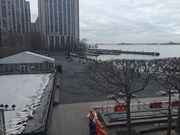

The Bizarre Mind of Anthony Egbo
Welcome all and thank you for taking the time to explore my very first website. Here you will see the first of many of my MMP work. You will also have the pleasure of viewing my expressions and influences that enlightened me to put together a variety of my artwork. Although this is my first time experience putting all this together, this web development will further my passion for the combination of entertainment and technology.The images below will give a clear visual story of my years of involvment with technology and my interest in a world that combines computer and entertainment.

After graduating from high school I went straight into the workforce. I went to a technical vocational school where I trained for my CompTIA A+ certification. After obtaining it, I practically went straight to work and was contracted to different companies working as an I.T. professional.
(250 Vesey St.)
Although Information Technology can be a lucrative career to pursuit, it can be the most competitive and without a degree in the field it can lead to roadblocks. After 6-7 years doing desktop support and not growing within the industry in any of the companies I worked for; I decided to enroll into BMCC (Borough of Manhattan Community College) and pursue a career in anything involving technology and entertainment.
I was practically born and raised in NYC (Queens to be exact) and I still live in NYC until another opportunity present itself. From the images below, I was driving back from work and was taking pictures of the “City That Never Sleeps”; for the first time NYC is on hibernation due to this awful pandemic. But one thing is clear when NYC wake up, it will wake up stronger than ever.